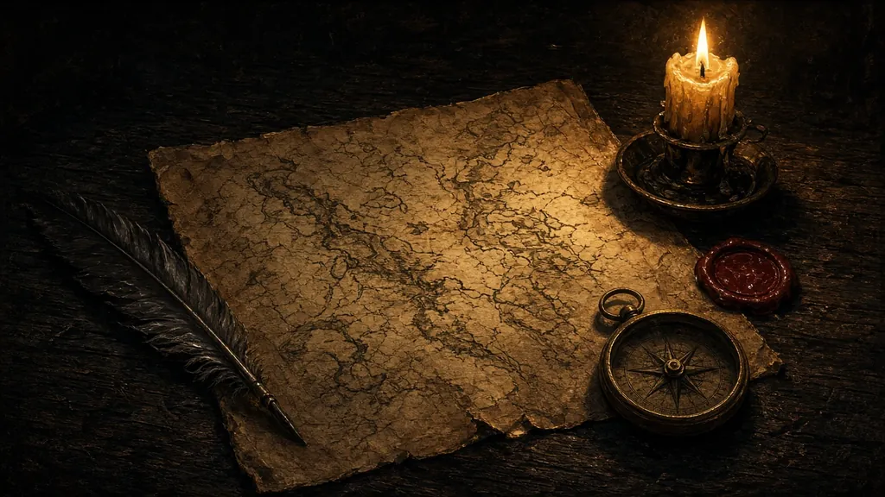

Récompenses d’héritage : les 4 récompenses du lancement
Les quatre récompenses d’héritage annoncées pour le lancement (jouet, mascotte, tabard, monture), débloquées par les points d’héritage cumulés sur le compte.
- 23 pages
- 3 min
- 3 sources
Fiches et articles publiés uniquement. Échap pour fermer.
Progression, héritage et suites de quêtes documentées.
Les quatre récompenses d’héritage annoncées pour le lancement (jouet, mascotte, tabard, monture), débloquées par les points d’héritage cumulés sur le compte.


Vignettes : illustrations d’ambiance — ne constituent pas une source.